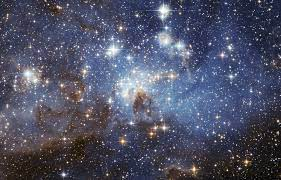

STARS

Stars are born within the clouds of dust and scattered throughout most galaxies. A familiar example of such as a dust cloud is the Orion Nebula. Turbulence deep within these clouds gives rise to knots with sufficient mass that the gas and dust can begin to collapse under its own gravitational attraction.